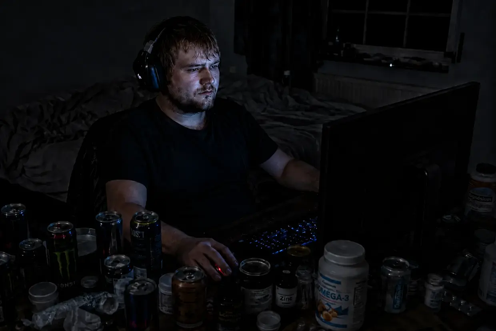

Biographie, version longue, partie 2 : le test à haut risque
Si vous avez lu mon histoire jusqu’ici, vous pourriez penser : « D’accord, il a vaincu son premier épisode d’acouphènes. Happy end. » Mais la vérité, c’est que le pire restait encore à venir. Le véritable effondrement de mon corps — que j’ai vécu comme une menace pour ma vie — m’attendait encore.
Vous cherchez la version courte ? Cette deuxième partie entre dans les moindres détails : le crash lié au SFC, l’impasse à 6 800 euros, l’expérience de provocation délibérée par le bruit. Si vous préférez une version plus compacte, le récit court est fait pour vous.
La réaction en chaîne dévastatrice : le basculement dans le SFC

Il est extrêmement important de préciser une chose d’emblée : ce crash n’était pas le « prix » de la guérison de mes acouphènes. Les acouphènes eux-mêmes n’en étaient pas la cause. Il s’agissait plutôt d’une réaction en chaîne dévastatrice, distincte de mes acouphènes, qui a complètement déséquilibré mon système. Mon corps et mon système nerveux ont été littéralement vidés jusqu’à la dernière goutte par la combinaison de plusieurs facteurs majeurs :
- Le traumatisme de fond : je portais encore en moi un traumatisme psychique profond sur lequel je n’avais pas travaillé (déclenché par un bad trip extrêmement violent sous l’effet d’une drogue, fin 2010). J’avais délibérément passé ce détail sous silence dans la première partie de mon histoire, car il y était avant tout question des lésions physiques de l’oreille et je ne voulais pas détourner l’attention du véritable sujet. Mais dans ce crash total du système, ce traumatisme est devenu un facteur gigantesque, car il entretenait dans mon système nerveux un stress permanent, latent.
- Les séquelles de la cortisone : les perfusions à forte dose prescrites par les médecins avaient chimiquement plongé mon corps dans un état d’éveil artificiel et permanent.
- Le paradoxe énergétique, le rythme du sommeil et le piège des compléments : ici, tout lecteur attentif pourrait légitimement se demander : « Attendez… S’il fonçait tout droit vers un SFC sévère, comment pouvait-il parfois passer des nuits blanches, rester actif pendant des périodes interminables et avoir en même temps encore assez de force pour guérir ses acouphènes ? Ça ne colle absolument pas ! » La réponse tient à un paradoxe biologique sournois : à ce moment-là, je n’avais pas encore développé un SFC à part entière (il ne s’est déclaré que bien plus tard, à cause de l’infection par l’EBV, alors que mes acouphènes étaient déjà guéris). Bien au contraire : d’un point de vue physique, mes cellules disposaient même de beaucoup d’énergie par rapport à ce qu’elles consommaient ! Le soir, j’étais extrêmement sous tension, incapable de trouver le calme, et tout mon rythme de sommeil s’est massivement décalé, de plus en plus tard. Je poussais mon corps à bout avec un mode de vie excessif, riche en sucre et en caféine, et je continuais à prendre précisément les compléments alimentaires stimulants qui m’avaient aidé lors de mon premier épisode d’acouphènes. Cette combinaison m’a propulsé dans un « surrégime » absolu. Et oui, mon corps a utilisé exactement cette énergie présente en surabondance (combinée à la protection stricte de mes oreilles) pour guérir progressivement et avec succès mes acouphènes ! Mais le prix à payer a été terrible : lorsqu’on fait tourner son moteur sans pause au cœur de la zone rouge, on provoque une usure extrême. La surstimulation impitoyable du système nerveux, le sommeil contre nature et le fonctionnement permanent à plein régime ont entraîné une acidification cellulaire massive et une accumulation de déchets. Durant cette phase, je ressentais certes de l’énergie, mais semaine après semaine, je détruisais ma batterie cellulaire, jusqu’à ce qu’elle soit littéralement grillée et complètement vidée.
- La destruction chimique de l’intestin (antibiotiques et protection gastrique) : à tout ce stress nerveux et physique s’est ajouté un autre facteur physique majeur. À cause d’un diagnostic d’Helicobacter pylori, j’ai dû suivre une trithérapie antibiotique agressive, puis prendre de puissants inhibiteurs de la sécrétion acide gastrique pendant trois mois entiers. Pour ma flore intestinale, ce fut le coup de grâce absolu. Comme environ 80 % du système immunitaire humain se trouve dans l’intestin, j’avais, sans le savoir, fait sauter ma principale ligne de défense physique.
Je faisais tourner mon moteur intérieur comme celui d’une voiture de sport à son régime maximal — mais sans une seule goutte d’huile. Cette surstimulation chronique et la destruction de mon intestin avaient fini par mettre mon système immunitaire à genoux. Et c’est précisément à ce moment de faiblesse absolue que c’est arrivé : j’ai contracté le virus d’Epstein-Barr (mononucléose infectieuse) au contact de mon cousin. Comme je n’avais encore jamais traversé cette infection sévère et que mon système n’avait absolument plus aucune réserve, ce fut le coup final, dévastateur. En l’espace de quelques semaines, j’ai développé le tableau complet du syndrome de fatigue chronique (SFC).
L’impasse à 6 800 euros et ma plus grande arrogance
Ce SFC a été la pire période de ma vie. Dans sa forme la plus extrême, cet état a duré sans interruption entre onze et treize mois. J’étais presque entièrement cloué au lit et prisonnier de ma maison. J’avais l’impression que mon corps brûlait de l’intérieur, mon cerveau était enfoui sous un brouillard épais et mes muscles avaient perdu toute leur force. Les mitochondries (les centrales énergétiques des cellules) avaient presque complètement cessé de produire de l’ATP (énergie cellulaire).
Dans mon désespoir, j’ai essayé tout ce que le marché avait à offrir. Je faisais des recherches comme un fou et j’achetais au hasard tout ce qui promettait ne serait-ce qu’une étincelle d’espoir. Il n’y avait pas seulement les compléments alimentaires de grands acteurs américains prétendument « scientifiques », comme Life Extension ou Thorne. La liste était interminable : j’ai acheté des quantités de médicaments en vente libre, d’innombrables remèdes homéopathiques, des produits naturels comme les sels de Schüssler, de coûteuses procédures de « détoxification » et des produits censés favoriser l’élimination — et même des préparations destinées à un traitement hormonal substitutif, afin de reconstruire mes glandes surrénales supposément complètement épuisées.
À cela se sont ajoutés les thérapeutes et les traitements les plus divers. Je me suis fait administrer de coûteuses perfusions de vitamine C dans l’espoir de réactiver mon système immunitaire. Je suis allé voir une thérapeute spécialisée, formée à la méthode du Dr Klinghardt. Là-bas, on a essayé de me traiter avec de fortes doses de vitamine D, des antifongiques et un traitement contre une prétendue maladie métabolique rare dont j’aurais souffert, la KPU (cryptopyrrolurie). (Une précision importante, pour ne pas créer de fausse impression : cette visite concernait uniquement mon SFC, c’est-à-dire mon épuisement extrême — mes acouphènes étaient déjà complètement guéris à ce moment-là. Il ne s’agissait pas non plus d’une détoxification des métaux lourds, mais plutôt de cette histoire de KPU et de vitamines. Son approche n’était absolument pas mauvaise en soi ; à l’époque, ce n’était tout simplement pas la bonne clé pour mon système totalement bloqué.) À ce jour, je ne sais toujours pas si j’ai réellement eu cette KPU. En tout cas, pour mon état de l’époque, cela ne m’a absolument rien apporté.
J’ai même voulu suivre un entraînement simulé en altitude dans un cabinet (appelé hypoxithérapie ou IHHT), au cours duquel on respire alternativement un air pauvre puis riche en oxygène afin de soumettre artificiellement les mitochondries à un stress et de les forcer à redémarrer. Je me suis effectivement rendu sur place, mais j’ai immédiatement renoncé, parce que j’ai tout simplement trop paniqué et que mon système en miettes refusait de s’y soumettre.
J’étais finalement si désespéré que je voulais me faire hospitaliser dans une clinique spécialisée. La date d’admission était déjà fixée — je n’ai dû l’annuler que parce que, peu avant, je m’étais moi-même sorti de cet enfer.
En une seule année, j’ai englouti, sans exagérer, environ 6 800 euros dans toute cette folie : préparations, appareils et thérapies. Le résultat ? Absolument zéro. Rien ne fonctionnait. Mon corps ne répondait à rien de tout cela. Je me sentais enterré vivant.
Et c’est là qu’apparaît la plus grande ironie, presque tragicomique, de tout mon parcours face à la maladie :
Au cours de mes nuits de recherches intensives dans le marécage du SFC, je suis effectivement tombé sur le site d’une entreprise allemande appelée FitLine. Je revois encore exactement la scène dans ma tête : j’ai atterri sur cette page. J’y suis resté quatre ou cinq secondes, pas plus. Puis j’ai lu le nom « FitLine », vu la présentation et pensé avec toute mon arrogance : « Mais c’est quoi, ce nom débile de boisson sportive à la mode ? Il me faut des traitements lourds, pas des jus multicolores. »
Dans ma tête, je l’ai immédiatement classée dans la même catégorie que Ratiopharm ou Centrum : à mes yeux de l’époque, de la camelote grand public de qualité absolument médiocre. J’ai fermé l’onglet, froidement. Je n’ai absolument pas vu que cette entreprise proposait une garantie de remboursement à 100 %, totale et sans condition. Mon ego et mes connaissances superficielles me barraient la route.
Le comble de cette ironie tragicomique, c’est que cette entreprise et ses produits allaient se révéler bien plus tard être la clé décisive de tout mon processus de régénération.
Aujourd’hui, d’un côté, je m’en veux énormément d’être passé à côté, durant ces cinq secondes d’arrogance, d’une mesure qui m’aurait probablement épargné de nombreux mois supplémentaires dans l’enfer du SFC. Mais avec le recul, je suis même extrêmement soulagé de ne pas avoir lancé tout de suite, à l’aveugle, ma propre expérimentation. Car j’ai compris plus tard qu’il fallait en réalité une compréhension extrêmement poussée du système pour pouvoir utiliser correctement ces produits dans un processus de régénération entièrement individuel. Sans ces connaissances, un essai précipité et irréfléchi n’aurait peut-être même pas fonctionné dans l’état où je me trouvais alors. Aujourd’hui, je suis infiniment reconnaissant d’être retombé plus tard sur cette entreprise grâce à un Heilpraktiker, puis d’avoir finalement guéri avec l’aide de son traitement et de ses instructions précises sur la façon d’utiliser les produits.
Fin mai 2013 : le flush de niacine et le redémarrage cellulaire
À mon point le plus bas, fin mai 2013, quand je ne savais vraiment plus quoi faire et que je passais 98 % de mon temps alité, quelque chose de décisif s’est produit. J’étais couché dans mon lit, mon ordinateur portable devant moi. Comme j’avais beaucoup cherché sur les acouphènes en raison de mon passé, l’algorithme de YouTube a soudain fait apparaître une vidéo dans mon fil. C’était une conférence sur les acouphènes donnée par le Heilpraktiker, que je connaissais déjà grâce à YouTube. J’avais déjà regardé quelques-unes de ses vidéos et elles m’avaient énormément impressionné, car il expliquait les choses dans leur globalité, de façon incroyablement claire, avec une compétence impressionnante.
Comme je passais de toute façon mon temps à chercher désespérément de nouveaux médecins et d’autres Heilpraktiker, une impulsion a surgi en moi comme venue de nulle part : « Je vais écouter de nouveau ce qu’il a à dire. Voyons s’il me convainc assez pour que je tente ma chance avec lui. » J’ai lancé la vidéo, fermé les yeux de pur épuisement et me suis contenté d’écouter.
Il faut savoir une chose importante : à ce moment-là, ma mère refusait déjà catégoriquement de m’emmener voir encore d’autres médecins ou Heilpraktiker. En si peu de temps, nous avions tout simplement déjà englouti une somme incroyable — les fameux 6 800 euros — ; son refus était donc parfaitement compréhensible.
Mais tandis que je l’écoutais et que sa façon de parler me captivait de nouveau complètement, j’ai regardé de plus près et fait une découverte qui m’a littéralement scotché : ce type se trouvait à seulement trente kilomètres de chez moi ! Je n’en avais jusque-là absolument aucune idée. À cette seconde, j’ai pris une ferme résolution : « Je dois tenter ma chance avec lui. C’est ma toute dernière tentative avant de me faire définitivement hospitaliser. » Comme, par chance, ce n’était pas loin, je me suis traîné jusqu’à son cabinet avec mes toutes dernières forces pour un rendez-vous à la fin du mois de mai 2013.
Il a écouté mon histoire, s’est levé et m’a mélangé une poudre dans un verre d’eau. Il a posé devant moi un verre rempli d’un liquide orange vif, presque couleur carotte. Je l’ai bu.
Et alors — même si je ne l’ai compris qu’après coup — j’ai eu le déclic : ce qu’il m’avait donné était exactement l’ensemble FitLine complet (composé de Basics, Restorate, Activize, d’oméga-3 DHA/EPA fortement dosés et de Q10) — précisément ces « jus tendance » que j’avais rejetés avec une arrogance incroyable quelque temps auparavant !
Ce qui s’est produit dans le cabinet après que j’ai bu ce verre était absolument dingue : au bout de six à huit minutes, j’ai soudain senti une chaleur extrême envahir tout mon corps. J’ai senti un afflux de sang gigantesque et parfaitement perceptible parcourir mes veines. Ma peau a rougi, ça picotait partout. Pour la toute première fois depuis plus d’un an, j’ai ressenti de nouveau une véritable énergie physique dans mes cellules. L’Activize de l’ensemble avait déclenché chez moi un énorme flush de niacine.
Pour replacer tout de suite les choses dans leur juste contexte et ne faire peur à personne avec ces picotements : si ce flush a été aussi intense chez moi, c’est uniquement parce que mon corps était entièrement consumé et vidé au niveau cellulaire. Et ce n’était pas parce que je n’avais consommé aucun nutriment — j’avais auparavant avalé pour presque 6 800 euros de comprimés américains !
Dans mon cas, le véritable problème était une triple barrière dans mon système : premièrement, mon système gastro-intestinal était complètement déséquilibré par le stress permanent, les inflammations et les prises d’antibiotiques antérieures (qui avaient entraîné une dysbiose). Deuxièmement, à cause du SFC, mon intestin manquait tout simplement d’énergie cellulaire — d’ATP — pour accomplir encore le lourd travail de la digestion et de l’absorption des nutriments. Et troisièmement, le fonctionnement anaérobie de secours avait tellement acidifié mes cellules que même les nutriments qui parvenaient encore dans le sang ne pénétraient presque plus dans les cellules cibles. J’étais affamé au niveau cellulaire devant des assiettes pleines.
Pour moi personnellement et selon ce que je ressentais alors dans mon corps, c’est précisément cet ensemble de nutriments sous forme liquide et hautement biodisponible qui a soudain franchi cette énorme barrière d’absorption. À cet instant, l’espoir s’est rallumé. Peu après, vers le début de l’été 2013, j’ai définitivement mis ma fierté de côté, me suis procuré cet ensemble complet pour chez moi et j’ai commencé à le prendre rigoureusement chaque jour. Les résultats étaient presque surréalistes :
- Au bout de vingt jours : j’étais de nouveau assez en forme pour monter les escaliers tout à fait normalement.
- Au bout de deux mois : je n’étais plus du tout alité. Je pouvais enfourcher mon vélo et rouler vite et avec force dans la nature pendant une heure, sans être hors service pendant des jours ensuite (« malaise post-effort »).
- Au bout de trois à quatre mois : j’ai entamé ma première véritable reprise d’activité et suivi une formation en informatique dans une école. J’ai achevé cette formation avec une aisance absolue, sans que mon corps s’effondre de nouveau ensuite. Pour moi, physiquement, le SFC appartenait vraiment et définitivement au passé.
- Au bout d’un peu moins de deux ans : une fois mon système circulatoire de nouveau complètement habitué aux efforts et après m’être également restabilisé psychologiquement grâce à un travail ciblé sur mon traumatisme, je suis retourné dans le monde exigeant du travail. J’ai commencé chez REWE Online. Ce n’était pas un travail de bureau, mais un métier extrêmement physique — un véritable travail de forçat, où il fallait notamment porter de lourdes caisses de boissons jusqu’au cinquième étage. Et mon corps ne s’est pas contenté de le supporter : j’étais même de nouveau dans une forme physique si extrême qu’il m’arrivait assez souvent d’y faire volontairement des doubles journées.
Physiquement, je n’étais pas seulement revenu à 100 % : j’étais même devenu plus robuste et plus performant sur le plan énergétique que jamais auparavant dans toute ma vie !
Pourquoi est-ce que je raconte tout cela ? (Le pont vers le deuxième épisode d’acouphènes)
À ce stade, vous vous demandez peut-être : pourquoi raconte-t-il, sur un site consacré aux acouphènes, aussi longuement et avec autant de détails son crash dans le SFC et sa guérison grâce au Heilpraktiker ? Il y a une raison très précise et décisive à cela.
Cet enfer du SFC a été le fondement absolu de tout ce qui a suivi. Sans cet effondrement physique total, je n’aurais jamais acquis cette compréhension systémique extrêmement profonde de l’énergie cellulaire (ATP) et de la biodisponibilité. Je n’aurais jamais découvert cet ensemble particulier de nutriments ni démontré par ma propre expérience qu’avec les bonnes synergies, on pouvait ramener à 100 % de leurs capacités des cellules complètement vides et bloquées.
Ces connaissances durement acquises pendant ma période de SFC étaient la clé manquante de la matrice définitive des acouphènes. Elles m’ont donné une confiance si inébranlable dans les capacités de réparation biochimique de mon corps qu’elles ont directement conduit aux événements que je vais maintenant vous raconter. Elles étaient la condition absolue de l’expérience la plus folle et la plus risquée de ma vie.
⚠️ Remarque importante : avant de décrire cette expérience, je tiens à préciser clairement que j’aurais aussi pu subir des dommages permanents. Ne la reproduisez en aucun cas.
La décision de passer au test de résistance (l’expérience)
Les années ont passé. Je menais une vie tout à fait normale, mon audition était parfaite et mon réservoir cellulaire d’ATP était chargé en permanence à 200 % de sa capacité grâce à ma routine quotidienne à base de nutriments. Je repensais souvent à ma théorie sur les acouphènes.
Cette logique ne me lâchait pas : à ce moment-là, j’avais l’impression d’avoir trois fois plus d’énergie que lors de mon premier épisode d’acouphènes. À l’époque, j’avais donc dû m’enfermer pendant six mois dans une chambre silencieuse, parce qu’avec si peu d’énergie, mes cellules auditives étaient tout simplement trop faibles. Chaque bruit normal du quotidien avait alors probablement des effets négatifs bien plus forts sur la guérison de mes acouphènes que ce ne serait le cas maintenant si je revivais tout cela. Voilà exactement le raisonnement que j’avais alors.
J’ai donc fait ce qui doit paraître absolument dément à n’importe quel médecin : j’ai délibérément provoqué un deuxième épisode d’acouphènes.
La provocation délibérée

Quelques années après ma guérison du SFC, deux choses se sont conjuguées : d’un côté, j’avais encore une immense soif de vivre. De l’autre, ma théorie sur les acouphènes restait solidement ancrée dans ma tête et je voulais absolument en avoir le cœur net. Lors d’une fête déjà très bruyante, j’ai donc complètement abandonné mon ancienne prudence protectrice. J’ai fait la fête avec une intensité particulière et me suis délibérément exposé à fond à cette forte charge sonore.
Pendant cette fête, j’en ai parfois senti le contrecoup : aux moments où le bruit était particulièrement fort, une nette sensation de pression est soudain apparue dans mes oreilles. Ce n’était en aucun cas aussi violent qu’après ma toute première nuit en discothèque, mais je sentais très précisément qu’à ces moments-là, le bruit mettait réellement mes oreilles à rude épreuve. Dès que le volume redescendait un peu, cette pression disparaissait elle aussi au bout de peu de temps. Ce n’était qu’un signal d’alarme temporaire et — c’était le point décisif — les acouphènes n’étaient pas encore là.
C’est précisément cette sensation de pression qui a donné l’impulsion définitive et actionné l’interrupteur dans ma tête. Je me suis dit : « D’accord, le système vacille. Si je veux aller au bout de l’expérience, je vais maintenant la pousser à l’extrême absolu, jusqu’à ce que les acouphènes reviennent. »
Quand la musique devient une torture physique
Pendant des semaines, j’ai ensuite enchaîné les sessions excessives au casque, avec de la musique très forte. Durant cette phase, ma perception auditive a changé de façon radicale. Par moments, la musique ne me procurait plus absolument aucun plaisir. Écouter était devenu un pur effort et ressemblait à une véritable douleur physique — une pression extrêmement désagréable, diffuse et ressentie au plus profond de l’oreille.
Chaque instinct de survie cellulaire, chaque fibre de mon corps criait en moi : enlève ce casque ! C’est beaucoup trop pour tes oreilles ! C’était le signal d’alarme glacial de mes cellules ciliées qui, sous la force mécanique des ondes sonores, luttaient littéralement pour leur survie. Mais mon esprit analytique avait pris le contrôle. J’ai ignoré la douleur et continué obstinément.
En dehors de l’ordinateur aussi, mon quotidien a continué à volume maximal. Il n’était pas question pour moi de m’enfermer dans ma chambre comme la première fois. Je faisais de longs trajets en voiture avec la musique forte, j’allais aux anniversaires de mes amis, je sortais faire la fête et je me prenais de plein fouet tout le vacarme impitoyable de la vie.
Le retour du son
Puis, un soir, le moment est arrivé. J’étais de nouveau assis devant l’ordinateur, j’écoutais encore de la musique au casque — et soudain, j’ai perçu de nouveau dans mon oreille gauche ce signal léger mais impossible à confondre. Le son était revenu. Il était encore très faible, je pouvais facilement le couvrir avec les bruits environnants, mais il était là.
À cet instant, un conflit extrême et absurde faisait rage en moi. D’un côté, un effroi brut m’a traversé : « Oh merde ! » De l’autre, il y avait cette fascination presque délirante : « D’accord, c’est dingue. J’ai réussi. C’est exactement ce qu’il me fallait pour le test. »
Le hack du système : l’interruption volontaire de mon protocole de nutriments (faire grandir le monstre)
Mais comment les acouphènes ont-ils pu, dans ces conditions, remonter brutalement jusqu’à 50 % du volume sonore de mon tout premier épisode d’acouphènes ? Avec mon protocole FitLine, j’avais pourtant bâti un énorme bouclier d’ATP chargé à 200 % ! La réponse tient à un calcul glacial : j’ai très consciemment démantelé ce bouclier.
Quand les acouphènes sont d’abord redevenus à peine perceptibles, de manière diffuse, dans mon oreille gauche, j’ai senti que mon système entièrement rechargé se mettait immédiatement à lutter contre eux. Les nutriments maintenaient les dégâts à un niveau extrêmement faible. Mais pour mon expérience ultime, c’était précisément ce que je ne voulais pas. Si je voulais prouver que mon protocole pouvait « réparer » des acouphènes sévères « en cours de route » — autrement dit au quotidien —, les acouphènes devaient d’abord remonter à un niveau suffisamment marqué et incontestable.
J’ai donc pris une décision absolument démente, mais hautement consciente : j’ai volontairement interrompu tout mon protocole de nutriments et cessé de prendre mon kit FitLine. J’ai aussi complètement arrêté la lécithine — que je connaissais déjà depuis l’époque de mon premier épisode d’acouphènes (biographie, partie 1) et que, dans mon modèle explicatif de l’époque, je considérais comme le fondement absolu de la gaine de myéline.
En plein milieu de l’expérience avec le bruit, j’ai délibérément privé la cellule de ses principaux facteurs de synergie et de ses matériaux de construction. Je voulais littéralement faire grandir le « monstre », afin que les produits n’atténuent pas les acouphènes trop tôt, avant même qu’ils aient atteint le niveau auquel je voulais les porter pour mon test. C’était le test de résistance ultime et risqué, sans aucun filet de sécurité.
Le crash final : 50 % et le chaos sonore
Il a fallu, d’après mon estimation, un mois et demi, ou deux mois tout au plus, pour que mon système finisse par s’effondrer complètement sous l’effet de cette provocation permanente extrême et de l’absence de bouclier biochimique.
Un soir, le point de rupture a été atteint. Les acouphènes n’étaient désormais plus faibles. Ils étaient revenus avec une violence brutale. Dans l’oreille gauche, ils atteignaient environ 50 % du volume sonore de mon tout premier épisode d’acouphènes. Les acouphènes s’étaient également manifestés de nouveau dans l’oreille droite, mais ils y restaient relativement faibles et se laissaient facilement couvrir par les bruits environnants. Dans l’oreille gauche, en revanche, ils étaient absolument obsédants.
Et le paysage sonore était complètement fou et nouveau. Ma tête captait un chaos absolu de décharges électriques erratiques :
- Le sifflement sinusoïdal typique et pénétrant (c’était le son principal).
- En plus, j’entendais soudain un signal bizarre, semblable à du morse. Cela m’était jusque-là totalement inconnu et j’étais presque fasciné qu’une chose pareille soit même possible.
- À cela s’ajoutait un souffle grave et inquiétant dans l’oreille gauche, que je n’avais encore jamais perçu.
- Et, pour couronner le tout, une sirène dont le volume montait et descendait, qui restait parfois très présente pendant deux semaines avant de repasser à l’arrière-plan.
Les expériences en temps réel sur ma propre oreille
Avant de me consacrer définitivement à la guérison après cette escalade, je voulais absolument vérifier encore plusieurs choses durant cette phase où le volume était extrême. Je savais désormais comment les acouphènes fonctionnaient et je voulais soumettre ce système à un test de résistance physique sur moi-même. J’ai littéralement testé le système à sa limite de charge :
1. Le test mâchoire-cou (l’interconnexion) :
Je voulais vérifier si mes acouphènes réagissaient de nouveau à la nuque et à la mâchoire. J’ai donc fait de grands mouvements de tête, contracté le cou et tordu la mâchoire. Le résultat était sans équivoque : je pouvais agir à 100 % sur le son, aussi bien sur son timbre que sur son volume !
2. Le test du bruit blanc (la preuve contre le masquage) :
J’ai mis mon casque et fait jouer pendant deux à trois minutes un bruit blanc extrêmement fort. Puis j’ai arraché le casque. Le résultat était à la fois fascinant et cruel : pendant quelques secondes, les acouphènes avaient complètement disparu. Un silence de mort absolu régnait. Mais juste après, ils se sont remis à hurler, plus forts et plus agressifs que jamais.
(Ma preuve glaciale sur mon propre corps : les médecins recommandent le bruit blanc pour masquer les acouphènes. À mes yeux, que se passait-il réellement sur le plan physiologique lorsque je le faisais avec ce volume extrême ? Le bruit intense forçait mes cellules ciliées déjà malades à pomper des ions sans interruption. Quand je retirais le casque, la batterie de la cellule était entièrement vidée. Pendant quelques secondes, elle était temporairement incapable de fonctionner et d’émettre un signal — « morte » seulement dans ce sens, pas biologiquement — et « muette ». Dès qu’elle rechargeait une quantité minuscule d’énergie, le signal d’urgence revenait avec fracas, deux fois plus fort !)
3. Le test du claquement de mains (le choc mécanique) :
Cela peut sembler débile, mais j’ai claqué une fois fortement des mains juste devant mon oreille. Cela a produit une petite onde de pression. Résultat : à l’instant précis du claquement, les acouphènes ont hurlé de rage. Mais ils sont assez vite revenus à leur niveau normal.
La panique à l’état brut dans la nuit
Mais quand je me suis retrouvé au lit le soir, la réalité m’a rattrapé de plein fouet. Les sons dans ma tête étaient si assourdissants et si obsédants que je ne pouvais pas les couvrir, surtout dans l’oreille gauche, même avec la télévision. Cela rendait l’endormissement extrêmement difficile et me rappelait très fortement la période de mon premier épisode d’acouphènes.
J’ai alors eu réellement peur. L’euphorie initiale et la fascination devant la réussite de l’expérience avaient complètement disparu d’un seul coup.
Je fixais le plafond et mes pensées s’emballaient : « Mon Dieu, j’espère vraiment que ça va encore disparaître. Est-ce que j’ai complètement merdé ? Est-ce que c’était une énorme erreur ? Est-ce que je vais garder ça pour le reste de ma vie, uniquement parce que je voulais prouver quelque chose avec une expérience débile ? »
L’enfer était revenu.
L’arsenal minimal et le « mode moine » repoussé
Le lendemain matin, je me suis levé et la décision était prise. L’expérience avait atteint son point culminant. Le « monstre » était au niveau parfait. Il était temps de renverser la situation et de reprendre les produits. Quand mon nouveau colis FitLine est arrivé, je suis aussi allé racheter en magasin ma lécithine habituelle, qui avait fait ses preuves, pour relancer le retour à la normale et la guérison.
Mon protocole de guérison se présentait donc ainsi :
- L’ensemble FitLine complet (Activize, Restorate, Basics et oméga-3 avec Q10).
- Des granulés de lécithine.
(Mon explication biologique de l’époque était la suivante : pourquoi la reconstruction que je supposais alors a-t-elle fonctionné cette fois même SANS la poudre amère d’acides aminés dont j’avais eu besoin la première fois ? Lors de mon premier épisode d’acouphènes, je souffrais d’une gastrite chronique sévère. À l’époque, je ne pouvais pas décomposer les protéines provenant d’une alimentation normale ; je devais donc prendre en complément des acides aminés purs, prédigérés. Lors de mon deuxième épisode d’acouphènes, des années plus tard, ma digestion fonctionnait de nouveau normalement après le rétablissement de mon intestin. J’en ai donc déduit à l’époque que mon système gastro-intestinal pouvait lui-même fournir, à partir d’une alimentation normale, les acides aminés nécessaires. Aujourd’hui, je me concentre surtout sur les stéréocils et les membranes cellulaires. Je ne sais pas avec certitude si le nerf auditif ou la myéline ont joué un rôle dans mes épisodes.)
Dès lors, j’ai pris les produits quotidiennement, mais il y avait un énorme « problème » : à ce moment-là, j’avais une soif de vivre absolue. Ma victoire sur le SFC remontait alors à quelques années. J’avais repris le travail, j’étais en plein dans la vie, totalement dans le flow. Je me suis donc dit : « Je vais d’abord prendre ce protocole pour amortir le pire. Mais comment je vais m’y prendre avec ce ‹ mode moine › extrême… je verrai ça plus tard. » Je n’avais tout simplement absolument aucune envie de me couper complètement de mes amis, du travail et de la vie comme la première fois. Je remettais donc cette décision difficile à plus tard.
Une gestion intelligente du bruit au lieu d’un isolement total
J’ai donc choisi un compromis : j’essayais de maintenir le volume sonore aussi bas que possible au fil de la journée et d’éviter systématiquement les pics de bruit extrêmes. Concrètement, cela signifiait que je ne montais plus l’autoradio à fond, que je ne faisais plus de sessions bruyantes au casque chez moi et que, logiquement, je restais loin des discothèques.
Mais en dehors de cela, je ne me suis pas complètement retiré. Je continuais à faire mes courses tout à fait normalement. J’allais à la fête foraine avec mes amis et au cinéma avec mes collègues. Je continuais à vivre relativement normalement. Et chaque fois qu’une occasion spontanée de m’amuser se présentait et que je ne voulais pas dire « non » à cause du volume — par exemple sortir avec des amis (pas dans des discothèques bruyantes, mais à des soirées ordinaires) —, je disais oui et j’y allais.
Le moment « Hein ?! » de la deuxième semaine
Et c’est là que quelque chose d’incroyable, auquel je ne m’attendais moi-même absolument pas, s’est produit. Dès les premières semaines — j’estime que c’était quelque part entre la deuxième et la troisième semaine —, je me suis soudain dit : « Mais c’est dingue, le son réagit déjà ! »
Les sons avaient diminué et s’étaient sensiblement atténués, et les fréquences commençaient à changer. D’abord, ce souffle totalement nouveau dans l’oreille gauche a disparu. Puis le sifflement permanent et le reste du paysage sonore se sont eux aussi nettement atténués. Les sons étaient loin d’être aussi agressifs qu’ils l’avaient été quelques semaines plus tôt. Je le remarquais surtout le matin.
J’étais assis là, complètement ahuri, le regard perdu devant moi, et je pensais : « Hein ?! D’accord, c’est dingue… Je continue en fait à vivre tout à fait normalement, j’évite seulement les pics de bruit forts et prolongés, et malgré tout, le système réagit déjà ?! » J’avais certes encore dans un coin de ma tête l’idée que, pour une guérison complète et définitive, je devrais peut-être bientôt passer malgré tout à ce strict mode moine — mais comme mon système réagissait déjà de manière exceptionnelle aux nutriments, j’ai simplement poursuivi pour le moment sur cette voie de compromis.
L’extinction des fréquences et le silence absolu
Le processus de guérison a été progressif et a duré environ trois à quatre mois. Mais les acouphènes n’ont pas disparu d’un seul coup : les fréquences se sont éteintes les unes après les autres, de façon systématique :
- L’oreille droite a cessé de se manifester la première. Au bout d’environ deux mois, elle était déjà complètement guérie et redevenue totalement silencieuse.
- Dans l’oreille gauche (la plus fortement atteinte), les fréquences folles se sont éteintes l’une après l’autre. (Ce souffle avait déjà disparu tout au début.) Ensuite, la sirène qui montait et descendait s’est estompée. Même le grondement grave de camion, apparu lui aussi récemment, s’est dissipé assez vite.
- La seule chose qui s’est révélée extrêmement tenace était le son sinusoïdal classique, de haute fréquence. Le boss final absolu.
Comme lors de mon premier épisode d’acouphènes, les heures du matin étaient l’indicateur décisif. C’était surtout le matin que je remarquais l’effet le plus fort de la régénération. C’était comme si le réglage d’un variateur se rapprochait peu à peu de zéro — autrement dit de « plus aucun acouphène ». Plus les semaines passaient, plus l’effet devenait spectaculaire : un jour, le son n’était plus seulement moins fort le matin, il avait même complètement disparu. Il n’était alors vraiment plus perceptible qu’avec des bouchons d’oreille, dans un calme absolu (exactement comme je l’avais déjà vécu et raconté lors de la guérison de mon premier épisode d’acouphènes), avant que le sifflement ne recommence à augmenter avec la fatigue de la journée.
Vers la fin du troisième mois, le son était devenu si faible le soir que je ne pouvais plus le percevoir qu’en portant des bouchons d’oreille dans une pièce totalement silencieuse ou en restant assis dans une salle de bains parfaitement calme. À ce moment-là, l’oreille droite était déjà complètement silencieuse. Il n’était encore que très légèrement présent dans l’oreille gauche.
Pour en finir une bonne fois pour toutes, je me suis encore procuré des gouttes spéciales de vitamine B12, que je déposais chaque jour directement sous ma langue afin de donner au système, par la muqueuse buccale, le tout dernier coup de pouce.
Et puis, à un moment donné dans les semaines qui ont suivi, les acouphènes ont complètement disparu. Aujourd’hui, je ne peux même plus dire exactement combien de semaines supplémentaires cela a pris, parce qu’à partir d’un certain moment, j’ai simplement cessé de leur accorder une attention aussi extrême. Mais un jour, ils n’étaient tout simplement plus là. Ils ont disparu. Sans aucune trace. À 100 %.
Pourquoi vous lisez tout cela
J’avais réussi le test de résistance ultime et le plus dangereux de ma vie.
Je savais désormais avec une certitude glaciale et absolue : la guérison d’acouphènes causés par le bruit n’est ni un hasard, ni un coup de chance, ni un destin mystique. Pour moi, elle avait été le résultat logique et inéluctable du fait d’avoir donné à ma cellule exactement ce dont elle avait besoin pour se réparer — et cela même en plein milieu d’une vie quotidienne normale.
À l’origine, je n’avais jamais prévu de créer un site ni de rendre toute cette histoire publique. J’avais traversé toute cette folie uniquement pour moi-même, pour trouver la paix et peut-être en parler un jour à mon ami ou au Heilpraktiker.
Mais quand j’ai pris conscience du nombre de millions de personnes que les médecins renvoient chez elles en leur disant que c’est « incurable » et qui perdent la raison dans l’obscurité silencieuse de la nuit… j’ai su que je n’avais pas le droit de garder ces connaissances pour moi.
Un dernier mot, bref et honnête (sans détour)
Je sais exactement comment toute cette histoire de maladie et de guérison doit paraître à quelqu’un qui l’observe de l’extérieur. Si je n’avais pas vécu tout cela dans ma chair — la cascade de « coïncidences » absurdes, ma rébellion initiale contre le médecin ORL, la chute profonde dans le SFC, l’échec des traitements à 6 800 euros et, enfin, cet incroyable « moment Matrix » où, à l’heure la plus sombre de ma vie, l’algorithme de YouTube a fait apparaître sur mon écran le Heilpraktiker qui allait me sauver, à seulement trente kilomètres de chez moi… —, je prendrais probablement moi-même tout cela pour un scénario hollywoodien bon marché ou un conte inventé. Ça paraît tout simplement trop fou pour être vrai.
Mais c’est précisément pour cette raison que je pose ici toutes mes cartes sur la table. Ce n’est pas une histoire de guérison inventée, ni un coup marketing, et encore moins de l’ésotérisme sans fondement. C’est une vérité physique et cellulaire, froide et brute. Je mets ouvertement sur la table les preuves matérielles dont je dispose : les audiogrammes médicaux qui montrent des pertes auditives à certaines fréquences documentent exclusivement mon premier épisode d’acouphènes ; il n’existe aucun audiogramme pour le deuxième épisode. S’y ajoutent les rapports de laboratoire, les diagnostics ainsi que les factures des cliniques et des thérapeutes.
Je ne vous raconte pas tout cela pour vous divertir. Je le raconte parce que j’ai trouvé, pour moi, une voie de sortie de ce système — et parce que j’espère que ces connaissances pourront aussi vous être utiles pour votre audition et pour vos nuits.
Remarque importante :
Ce que vous lisez ici est mon témoignage personnel. Chaque corps et chaque histoire sont différents.
← Mon histoire, version longue, partie 1 : la traversée de l’enfer